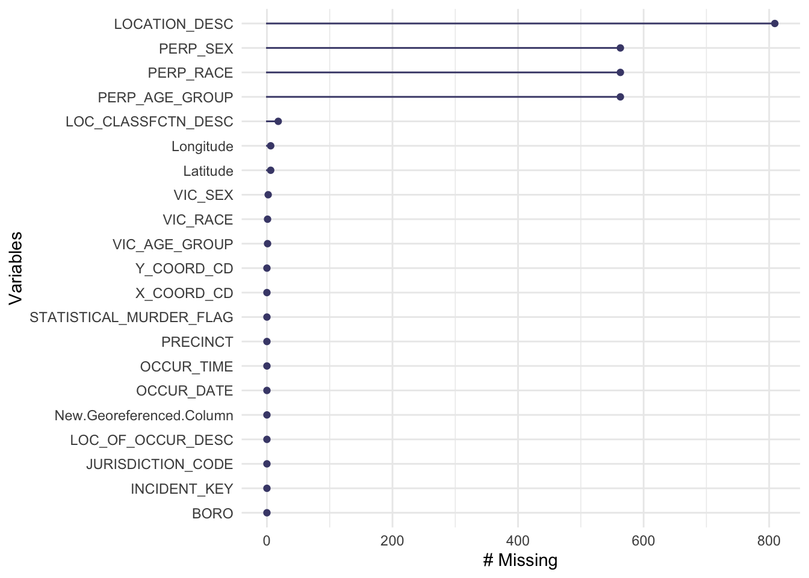

Chapter 3 Data
3.1 Sources
The source of this data set is the New York Police Department(NYPD), which is responsible for collecting and maintaining the data. It is manually collected by the police in each shooting incident that occurred in NYC during the current calendar year, extracted every quarter and reviewed by the Office of Management Analysis and Planning before being posted on the NYPD website. There are several data sets relating to crimes in NYC with different time range on the NYPD website, for example, the Incident Level Arrest Data (2013-now) and City Wide Crime Statistics Weekly. We chose the year-to-date Shooting Incident Data because shooting incidents are one of the most fatal crimes but it is also one that happens frequently in NYC, it is worth investigating the correlation and implication behind this data. And since the outbreak of the pandemic, crime statistics may differ from the previous years, therefore we are interested in the most recent year’s data.
This shooting incident data set contains 21 features as its columns, including the occurrence date, the STATISTICAL_MURDER_FLAG which is the result of the incident, information related to suspect and victim demographics, and the age, gender, and race of both suspect and victim. There is also rich information about each incident, such as the specific time, latitude and longitude of the incident, the location of occurrence like inside or outside, the borough and precinct, and the location classification category like housing or street. This data set covers almost all types of variables, such as categorical, time series, and spatial-temporal, with data types like plain text, data time, and number. There are 1400 rows and each row is a record of a shooting incident.
At first glance, we noticed that there are many missing values in this data set, especially in the columns about the perpetrator and the location of the incidents. We further investigate this in our missing value analysis to see if the missing values will affect the analysis, and we will also take action on these missing values when appropriate during our data visualization. Moreover, the empty cells are denoted as a string “(null)” in this data set, therefore our first step is to transform this data set into the correct format.
3.2 Cleaning / transformation
This data set is organized and does not contain a lot of mal-formatted values. Though data transformation is required for most of the graphs in the analysis process, in the preliminary stage, the only transformation needs to be done on the whole data set is to adjust the null values. The original data set uses “(null)” with character type to represent the NAs, therefore when loading the data set, all “(null)” values were transformed into the empty string NA.
3.3 Missing value analysis

## LOCATION_DESC PERP_AGE_GROUP PERP_SEX
## 809 563 563
## PERP_RACE LOC_CLASSFCTN_DESC Latitude
## 563 18 6
## Longitude VIC_SEX VIC_AGE_GROUP
## 6 2 1
## VIC_RACE INCIDENT_KEY OCCUR_DATE
## 1 0 0
## OCCUR_TIME BORO LOC_OF_OCCUR_DESC
## 0 0 0
## PRECINCT JURISDICTION_CODE STATISTICAL_MURDER_FLAG
## 0 0 0
## X_COORD_CD Y_COORD_CD New.Georeferenced.Column
## 0 0 0We first plot the missing value chart to check the missing values column-wise, along with a summary that clarify the specific number of missing values in each column. As only 7 columns out of the 21 columns contain missing value, we extract these columns to proceed further into the next step of missing value analysis.
 We then explore the missing patterns in this data set, which refer to the combination of columns missing. The variables are abbreviated to prevent the axis labels from overlapping with each other. The top part of this graph shows the percentage of missing values in each column, and notice that loc, which stands for LOCATION_DESC, has more than 50% of its value being missing. This may due to the fact there are two columns representing the location, and LOCATION_DESC is a subcategory of LOC_CLASSFCTION(loc_class), so that it may be left empty since it is too specific and redundant, recording either of them is enough information for representing the location. The middle part of the graph presents the missing patterns and the right part shows the percentage for each missing patterns. While loc alone is the highest among all 9 patterns, the pattern (loc + loc_class) has the lowest percentage of rows missing, which reinforces the hypothesis that loc is left empty for most cases as either of loc or loc_class contains enough information for the location of the incidents, so that the case that both are missing is rare.
We then explore the missing patterns in this data set, which refer to the combination of columns missing. The variables are abbreviated to prevent the axis labels from overlapping with each other. The top part of this graph shows the percentage of missing values in each column, and notice that loc, which stands for LOCATION_DESC, has more than 50% of its value being missing. This may due to the fact there are two columns representing the location, and LOCATION_DESC is a subcategory of LOC_CLASSFCTION(loc_class), so that it may be left empty since it is too specific and redundant, recording either of them is enough information for representing the location. The middle part of the graph presents the missing patterns and the right part shows the percentage for each missing patterns. While loc alone is the highest among all 9 patterns, the pattern (loc + loc_class) has the lowest percentage of rows missing, which reinforces the hypothesis that loc is left empty for most cases as either of loc or loc_class contains enough information for the location of the incidents, so that the case that both are missing is rare.
Also notice that 4 out of the 7 missing columns are about the location of the incident, the other 3 columns are all about the information of the perpetrator, and the pattern (p_age, p_sex, p_race) ranks the third for the percentage of rows. This shows that sometimes the perpetrator is able to escape from the crime scene, leaving with no record to the police, which is a strong contrast to the victims’ data since no victim’s information is missing in this data set.
From the above missing value analysis, we figure out that these missing values won’t create a huge impact on our data analysis, since either missing values are unnecessary and backed up by other information, or it is inevitable in nature that the source of this data is not able to provide the record.